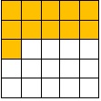

ENGAGE
What do you do before you go to sleep? In the website wwwgreatfacts.com, it says there that 44% of kids watch television before they go to sleep. 1f we are to follow this percentage, and forinstance there are 25 kids in a certain area, how many of them watch television before they go to sleep?
EXPLORE
Applying what we have learned from Lesson 6, we know that 44% is 44 out of 100.
Hence, we have the shaded portion in the figure below:
In fraction form this is 44/100.
Write a correct proportion, then find the value of the missing term,
n out of 25=44 out of 100
By the cross product rule:
100 x n = 44 x 25
100n=1100
100n/100=1100/100
n=11
Therefore, 11 out of 25 kids watch television before they go to sleep.The illustration below shows 44% of 25:
EXPLAIN
The figure below represents the percentage of kids who watch television before they go to sleep.
In fraction form, 44 out of 100 is 44/100 simplifying the fraction this is 11/25
Percent to Fraction
As given above, percent may be written in fraction form. To change a percent to a fraction, remove the percent symbol (%) and write the number as a numerator, then the denominator 100. This is from the definition that percent means for every hundred.
Moreover, make sure that the fraction form of the given percent is in simplest form.
Example 1Write the given percent as a fraction in simplest form
| Percent | Fraction | Simplest Form |
|---|---|---|
| 1. 23% | 23/100 | 23/100 |
| 1. 50% | 50/100 | 1/2 |
| 1. 36% | 36/100 | 9/25 |
Applications and Problem Solving
7 Realitea is Eli and Audi ‘s favorite coffee house. They are aware that the shop follows a color coding scheme with regard to the sugar level of their customer’s coffee. They use white for 0% sugar, yellow for 5% sugar green for 15% sugar blue for 25% sugar, and red for 50% sugar. When asked, Eli ordered a “kape barako at green sugar level” while Audi ordered a “white coffee at blue sugar level”. What fraction of the usual amount of sugaris in Eli’s and Audi’s coffee?
Decimal to Percent
To write a decimal number to percent form we may follow the two method below:
Example 2 just multiply the decimal number by 100 then affix the % symbol
| Decimal | x 100 | Percent |
|---|---|---|
| 1. 0.01 | 0.01 x 100 | 1% |
| 2. 0.45 | 0.45 x 100 | 45% |
| 3. 2.24 | 2.24x 100 | 224 % |
Fraction to Percent
To change a fraction to percent, change into decimal fist by dividing the numerator by the denominator. Then move the decimal point two places to RIGHT and affix the % symbol.
| Fraction | Decimal | Percent |
|---|---|---|
| 23/100 | 23+100 = 0.23 | 23% |
| 1/2 | 1+2=0.5 | 50% |
| 9/25 | 9+25=0.36 | 36% |
Percent to Decimal
Percent may also be written as a decimal number. There are two ways to a percent to a decimal.
| Percent | Fraction | Decimal |
|---|---|---|
| 23% | 23/100 | 23+100=0.23 |
| 50% | 50/100 | 50+100=0.5 |
| 36% | 36/100 | 36+100=0.36 |